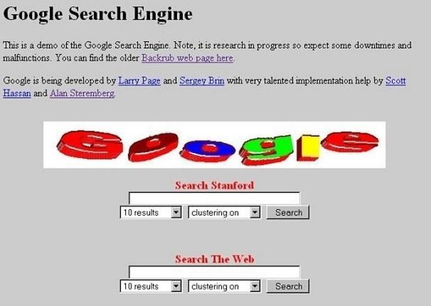

Primera página Web |
La primera página web fue creada el 6 de agosto de 1991 por Tim Berners-Lee, pero fue hasta el 23 de agosto del mismo año que esta fue lanzada a todo el mundo, fue gracias a que él y su equipo crearon en 1989 el protocolo HTTP, el cual es considerado el ADN de las páginas Web, así lucia la primera página web: |
|
Primer Navegador |
El primer navegador fue creado por el mismo Tim, llevaba el nombre de World Wide Web, con la característica que solo funcionaba en equipos NeXT |
|
Primer Buscador y primera versión de Google |
Después de él se creó Mosaic que era compatible con Windows y Mac, poco a poco fueron surgiendo más navegadores que se hicieron populares a nivel mundial como Netscape Navigator o Internet Explorer, pero el limitado acceso a internet y el gran costoso que tenía además de la falta de conocimiento del lenguaje y las herramientas hiso que los usuarios tardaran en crear sus propias páginas, fue hasta el años de 1993 que empezaron a surgir las primeras páginas web comerciales. |
 |